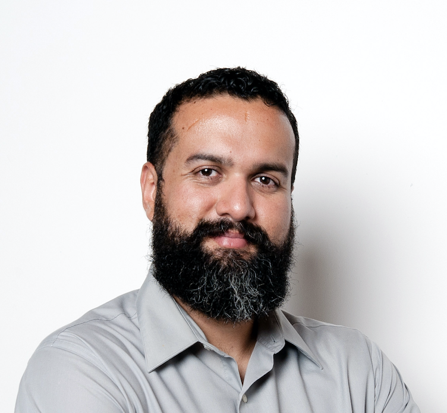

En el 2005 y con mi maestría en Gestión de Proyectos de Software recién terminada, tomé mi primera posición en un rol de liderazgo de proyectos. Un par de años después tropecé con Scrum y mi reacción fue de TOTAL RECHAZO!!
Hoy en día no solamente me gano la vida apoyando empresas en su adopción Ágil, sino que además soy el fundador de la comunidad Ágil costarricense, charlista y voluntario en eventos de Agilidad y Scrum en toda América y fundador de una empresa dedicada al coaching en agilidad.
¿Cómo sucedió eso? Vengan a mi charla y les cuento la historia... Si yo pude hacer esta transición, ¡tú también puedes!
Expositor: 
Fred Madrigal
Coach profesional con amplia experiencia en Transformaciones Digitales.
Apoyo a equipos gerenciales y formación de equipos Scrum.
Se ha desempeñado en una amplia variedad de industrias en Chile, Colombia, Costa Rica, Ecuador, El Salvador, Estados Unidos, India, México, Nicaragua y Perú.
Ha co-entrenado por más de 3 años los cursos de certificación de Scrum Master, es entrenador certificado en el método "Trainning from the Back of the Room".
Es facilitador certificado en el método LEGO®Serious Play® y es entrenador autorizado de Management 3.0 y para el International Consortium of Agile (ICAgile).
Graduado de ciencias de la computación de la UCR, y cuenta con maestrías en gerencia de proyectos y gestión de innovación de la Universidad Nacional de Costa Rica.